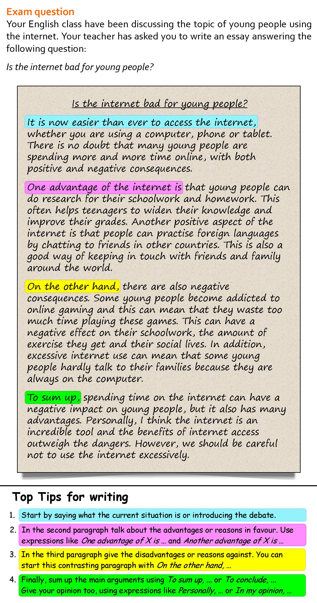

Instructions
Do the preparation exercise first. Then read the text and do the other exercises.
Reading

Discussion
What's your opinion? Do you think the internet is bad for young people?
Language level
Personal online tutoring
EnglishScore Tutors is the British Council’s one-to-one tutoring platform for 13- to 17-year-olds.

Comments